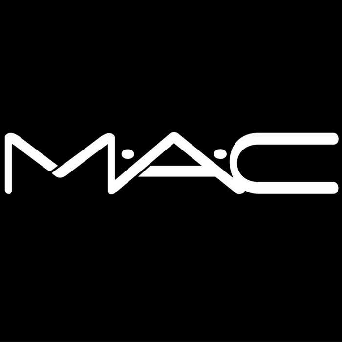

MAC COSMETICS
MAIS VENDIDOS
LOJAS
MEUS CONTATOS
NOSSA HISTÓRIA
SERVIÇOS

Make-up Art Cosmetics MAC
PASSO Á PASSO DE COMO APLICAR NOSSOS PRODUTOS
Passe a base
Passe o corretivo
Passe o pó
Passe a sombra
Passe o rímel
Passe o batom
USE OS PRODUTOS DA MAC PARA UM MAIOR SUCESSO EM SUA MAQUIAGEM!
BATONS MAC CORES VARIADAS